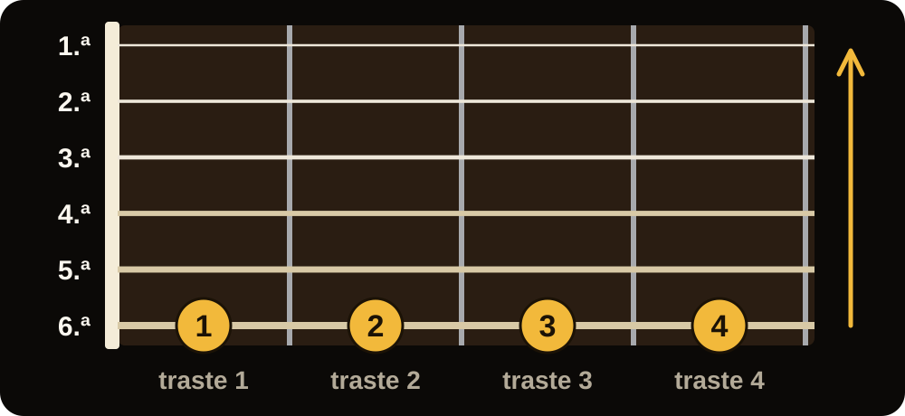
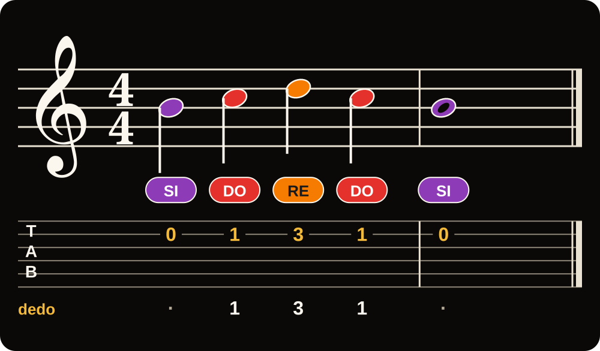

Las mismas notas, números y textos de las láminas de hoy, con el estilo nuevo. Ahora son angostas: en el teléfono se ven completas, sin deslizar. Las explicaciones van como texto debajo de cada lámina.
Mes 1
Clase 1Los 7 grados de la escala + la octavaDe DO grave (en la línea adicional de abajo) a DO agudo (3.er espacio). Cada nota lleva su grado, su nombre y su cifrado. El 1 y el 8 son la misma nota: una octava.Clase 4El pentagrama: 5 líneas y 4 espaciosLas líneas y los espacios se cuentan de abajo hacia arriba.Clase 4MI, FA y SOL en la 1.ª cuerdaMI al aire (0), FA en el traste 1 con el dedo 1 y SOL en el traste 3 con el dedo 3. En la tablatura, la línea de arriba es la 1.ª cuerda.
Mes 2
Clase 5Ritmo en negrasUna negra = un tiempo. Di «ta» en cada nota y lleva el pulso con el pie.Clase 5Figuras musicales y silenciosCuánto dura cada figura, su silencio y la sílaba para leerla. Los cuadros dorados son los tiempos que ocupa.Clase 5Ritmo con redondas, blancas y negrasAlarga la sílaba mientras la nota sigue sonando: «taa-aa» dura dos tiempos.

Clase 5Ejercicio 1-2-3-4Un dedo por traste: dedo 1 en el traste 1, dedo 2 en el 2… Empieza en la 6.ª cuerda y sube hasta la 1.ª.Clase 6Ritmo con silenciosEn el silencio no se toca: di «sh» y sigue contando el tiempo.Clase 6Compases de 2/4, 3/4 y 4/4El número de arriba dice cuántos tiempos tiene cada compás. El primer tiempo es el fuerte.

Clase 6SI, DO y RE en la 2.ª cuerdaSI al aire (0), DO en el traste 1 con el dedo 1 y RE en el traste 3 con el dedo 3.Clase 7Ritmo con corcheasDos corcheas unidas = un tiempo: «ti-ti».Clase 7Lectura en la 1.ª y la 2.ª cuerdaAhora se combinan las dos cuerdas. Mira la tablatura para saber en qué cuerda va cada nota.Clase 8Himno de la alegríaLa primera melodía completa, solo con la 1.ª y la 2.ª cuerda.